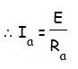
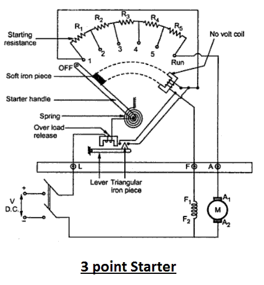

A 3 point starter in simple words is a device that helps in the starting and running of a shunt wound DC motor or compound wound DC motor. Now the question is why these types of DC motors require the assistance of the starter in the first case. The only explanation to that is given by the presence of back emf Eb, which plays a critical role in governing the operation of the motor. The back emf, develops as the motor armature starts to rotate in presence of the magnetic field, by generating action and counters the supply voltage. This also essentially means, that the back emf at the starting is zero, and develops gradually as the motor gathers speed.
The general motor emf equation E = Eb + Ia.Ra,
at starting is modified to E = Ia.Ra as at starting Eb = 0.

Thus we can well understand from the above equation that the electric current will be dangerously high at starting (as armature resistance Ra is small) and hence its important that we make use of a device like the 3 point starter to limit the starting electric current to an allowable lower value.
Let us now look into the construction and working of three point starter to understand how the starting electric current is restricted to the desired value. For that let’s consider the diagram given below showing all essential parts of the three point starter.

Construction of 3 Point Starter
Construction wise a starter is a variable resistance, integrated into number of sections as shown in the figure beside. The contact points of these sections are called studs and are shown separately as OFF, 1, 2,3,4,5, RUN. Other than that there are 3 main points, referred to as
1. 'L' Line terminal. (Connected to positive of supply.)
2. 'A' Armature terminal. (Connected to the armature winding.)
3. 'F' Field terminal. (Connected to the field winding.)
And from there it gets the name 3 point starter.
Now studying the construction of 3 point starter in further details reveals that, the point 'L' is connected to an electromagnet called overload release (OLR) as shown in the figure. The other end of 'OLR' is connected to the lower end of conducting lever of starter handle where a spring is also attached with it and the starter handle contains also a soft iron piece housed on it. This handle is free to move to the other side RUN against the force of the spring. This spring brings back the handle to its original OFF position under the influence of its own force. Another parallel path is derived from the stud '1', given to the another electromagnet called No Volt Coil (NVC) which is further connected to terminal 'F'. The starting resistance at starting is entirely in series with the armature. The OLR and NVC acts as the two protecting devices of the starter.
Working of Three Point Starter
Having studied its construction, let us now go into the working of the 3 point starter. To start with the handle is in the OFF position when the supply to the DC motor is switched on. Then handle is slowly moved against the spring force to make a contact with stud No. 1. At this point, field winding of the shunt or the compound motor gets supply through the parallel path provided to starting resistance, through No Voltage Coil. While entire starting resistance comes in series with the armature. The high starting armature electric current thus gets limited as the electric current equation at this stage becomes Ia = E/(Ra+Rst). As the handle is moved further, it goes on making contact with studs 2, 3, 4 etc., thus gradually cutting off the series resistance from the armature circuit as the motor gathers speed. Finally when the starter handle is in 'RUN' position, the entire starting resistance is eliminated and the motor runs with normal speed.
This is because back emf is developed consequently with speed to counter the supply voltage and reduce the armature current. So the external electrical resistance is not required anymore, and is removed for optimum operation. The handle is moved manually from OFF to the RUN position with development of speed. Now the obvious question is once the handle is taken to the RUN position how is it supposed to stay there, as long as motor is running ?
To find the answer to this question let us look into the working of No Voltage Coil.
Working of No Voltage Coil of 3 Point Starter
The supply to the field winding is derived through no voltage coil. So when field electric current flows, the NVC is magnetized. Now when the handle is in the 'RUN' position, soft iron piece connected to the handle and gets attracted by the magnetic force produced by NVC, because of flow of electric current through it. The NVC is designed in such a way that it holds the handle in 'RUN' position against the force of the spring as long as supply is given to the motor. Thus NVC holds the handle in the 'RUN' position and hence also called hold on coil.
Now when there is any kind of supply failure, the electric current flow through NVC is affected and it immediately looses its magnetic property and is unable to keep the soft iron piece on the handle, attracted. At this point under the action of the spring force, the handle comes back to OFF position, opening the circuit and thus switching off the motor. So due to the combination of NVC and the spring, the starter handle always comes back to OFF position whenever there is any supply problems. Thus it also acts as a protective device safeguarding the motor from any kind of abnormality.
 by
by